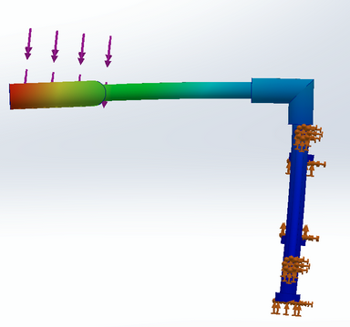
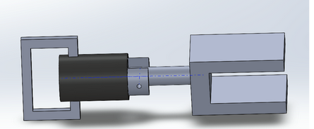

Led the mechanical design process for a mobility-assist device targeting vehicle entry and exit, from initial concept framing through iterative CAD, analysis, and prototype validation.
- Translated user needs around support, accessibility, and real-world vehicle compatibility into design constraints that shaped every concept direction.
- Used SolidWorks to model multiple assembly iterations, applying stress and fatigue analysis to identify weak points and justify geometry changes between revisions.
- Made explicit tradeoffs between usability, manufacturability, and repeated-load durability, documenting the reasoning behind each revision rather than just the change itself.
- Brought the design to a functional prototype stage, validating core concepts against realistic use conditions before the project concluded.


Specific outcomes, final geometry, and test data are covered under NDA. Images shown are early-stage public-safe process material, and these two iterations are work I specifically contributed within the group project.
SolidWorks
FEA
Prototype Fabrication
Human-Centered Design